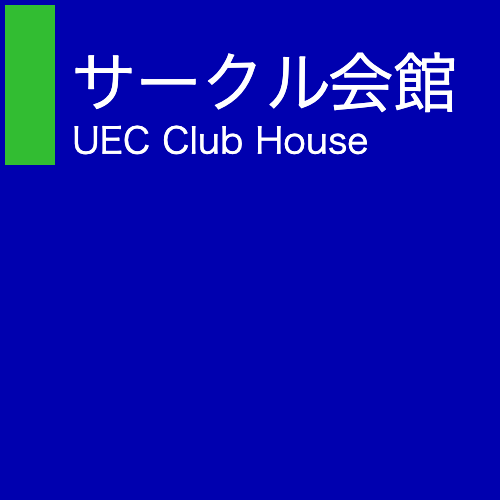

Work

stzr
開発: C
ジョークコマンドです。ストゼ○のAAが動きます。缶を開ける動作やラベルの変更、打ち上げなどの機能があります。
改良後、パッケージ管理システム(brew, snpa, aptなど)からインストールできるような形で配布するつもりです。
GitHub

UEC Kanmeiban Generator
開発: HTML, CSS, JavaScript
大学の施設に設置されている館銘板っぽい画像を生成します。館銘板とは、建物名などが記されたパネルで、マンションや公共施設などでよく見られます。
GitHubLifehack
dotfiles
開発: shellなど
「.」からはじまるファイルは、各サービスの設定ファイルです。うまく活用すれば、ターミナルのデザインやalias、アプリケーションの設定を自由に改良できます。dotfilesは、開発した設定を他のコンピュータ(shellが動いている)と共有できるようにするための設定ファイル集です。
GitHub